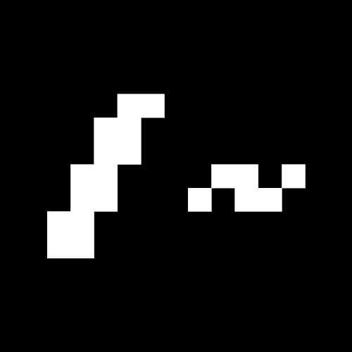

<nav class="navbar navbar-expand-lg navbar-dark bg-dark">
    <a class="navbar-brand" href="#">
      
      MrBackslash
    </a>
    <button class="navbar-toggler" type="button" data-toggle="collapse" data-target="#navbarNavDropdown"
      aria-controls="navbarNavDropdown" aria-expanded="false" aria-label="Toggle navigation">
      <span class="navbar-toggler-icon"></span>
    </button>
    <div class="collapse navbar-collapse" id="navbarNavDropdown">
      <ul class="navbar-nav">
        <li class="nav-item active">
          <a class="nav-link" href="https://vittodevit.github.io/vittodevit-legacy/">Home <span class="sr-only">(current)</span></a>
        </li>
        <li class="nav-item">
          <a class="nav-link" href="https://github.com/isdimaggio">ISIS Di Maggio</a>
        </li>
        <li class="nav-item">
          <a class="nav-link" href="#" style="cursor:pointer;"
            onclick="window.location.href='https://github.com/vittodevit'">Progetti Personali</a>
        </li>
      </ul>
      <ul class="navbar-nav ml-auto">
        <li class="nav-item">
          <a class="nav-link" href="https://mrbackslash.it/mirror/login.php">
            <svg width="1em" height="1em" viewBox="0 0 16 16" class="bi bi-lock" fill="currentColor"
              xmlns="http://www.w3.org/2000/svg">
              <path fill-rule="evenodd"
                d="M11.5 8h-7a1 1 0 0 0-1 1v5a1 1 0 0 0 1 1h7a1 1 0 0 0 1-1V9a1 1 0 0 0-1-1zm-7-1a2 2 0 0 0-2 2v5a2 2 0 0 0 2 2h7a2 2 0 0 0 2-2V9a2 2 0 0 0-2-2h-7zm0-3a3.5 3.5 0 1 1 7 0v3h-1V4a2.5 2.5 0 0 0-5 0v3h-1V4z" />
            </svg>
            Login Mirror</a>
        </li>
      </ul>
    </div>
  </nav>